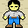

<!doctype html>
<html>

  <head>
    <title>UniMelb CCS</title>
    <script src="./js/jquery.min.js"></script>
    <script src="./js/jspsych.js"></script>
    <script src="./js/plugins/jspsych-survey-multi-choice.js"></script>
	  <script src="./js/plugins/jspsych-html-button-response.js"></script>
    <script src="./js/plugins/jspsych-external-html-keyboard-response.js"></script>
    <script src="./js/plugins/jspsych-survey-text.js"></script>
    <script src="./js/plugins/jspsych-text.js"></script>
    <script src="./js/plugins/jspsych-single-stim.js"></script>
    <script src="./js/plugins/jspsych-external-html.js"></script>
	  <script src="./js/welcome.js"></script>
    <link href="./js/css/jspsych.css" rel="stylesheet" type="text/css"></link>
  </head>

  <body>
	  <div id="welcome"></div>
  </body>

  <script>

    // const gr_order = [1,2,3,4,9,10,11,12,13,14,15,16,101,102,103,104,109,110,111,112,113,114,115,116,203,204];
    const gr_order = [2001, 2002, 2003, 2004, 2005, 2006, 2007, 2008, 2009, 2010, 2011, 2012, 2013, 2014, 2015, 2016, 2017, 2018, 2019, 2020, 2021, 2022, 2023, 2024, 2041, 2042, 2043, 2044, 2045, 2046, 2047, 2048, 2049, 2050, 2051, 2052, 2053, 2054, 2055, 2056, 20001, 20002, 20003, 20004, 20005, 20006, 20007, 20008, 20009, 20010, 20011, 20012, 20021, 20022, 20023, 20024, 20025, 20026, 20027, 20028, 30001, 30002, 30003, 30004, 30005, 30006, 30007, 30008, 30009];
    // const gr_order = [1033,1034,1035,1036];
    // const order = [2001, 2002, 2003, 2004, 2005, 2006, 2007, 2008, 2013, 2014, 2015, 2016, 2017, 2018, 2019, 2020, 2021, 2022, 2023, 2024, 2025, 2026, 2027, 2028];
    // const order = [20001, 20002, 20003, 20004, 20005, 20006, 20007, 20008, 20009, 20010, 20011, 20012];
    const order = [30001, 30002, 30003, 30004, 30005, 30006, 30007, 30008, 30009, 30010, 30011, 30012, 30013, 30014, 30015, 30026, 30027, 30028, 30029, 30030, 30031, 30032, 30033];

    /* initialise timeline*/
    let timeline=[];
    let introloop=[];
    let gr_introloop=[];
	  const images = [
		  './img/cargo_on_target.png',
		  './img/cargo.png',
      './img/cursorkeys.png',
		  './img/empty.png',
      './img/floor.png',
		  './img/keeper_on_target.png',
      './img/keeper.png',
      './img/target.png',
      './img/wall.png'
	  ];
    let code;

    /* function to start the jsPsych experiment */
    function startExperiment(){
      // record the Prolific code in the jsPsych data
      if (window.location.href.includes("?")){
        code = window.location.href.split('?')[1].split('&')[0].split('=')[1];
      } else {
        code = 'test';
      }
      jsPsych.data.addProperties({
        ProlificCode: code
      });

      jsPsych.init({
        timeline: timeline,
        preload_images: images,
        show_progress_bar: true,
        on_finish: function() {
          endExperiment( jsPsych.data.get().csv(), function() { document.write('<div id="endscreen" class="endscreen" style="width:1000px"><div class="endscreen" style="text-align:center; border:0px solid; padding:10px; font-size:120%; width:800px; float:right"><p><br><br><br>All done!<br><br>To receive payment, click <a href="https://app.prolific.co/submissions/complete?cc=COJ1V6FD">HERE</a>. Please contact us if something goes wrong and we\'ll fix it as quickly as possible.</p></div></div>') })
        }
      });
    }

    /* save and finish */
    function endExperiment(dataset,callback) {
      $.post('submit',{"content": dataset}); // uncomment to post data
      // console.log(dataset) // comment out to avoid console log
      setTimeout(callback,1000)
    }

    /* change the display property of a set of objects */
    function setDisplay(theClass, theValue) {
      var i, classElements = document.getElementsByClassName(theClass);
      for (i = 0; i < classElements.length; i = i + 1) {
        classElements[i].style.display = theValue;
      }
    }

    /* A grossly typical way to run the instructions is to go through a series
    of small slides (implemeted as trials in jsPsych) with a minimum reading time
    enforced for each slide, such that the "continue" button doesn't appear until
    the time elapses. At the end of the instructions, there is a short quiz, and if
    the participant gets them wrong they are sent back to the beginning */


    /* define the instruction block */
    const instruction_block_1 = {
      type: 'html-button-response',
      timing_post_trial: 0,
      choices: ['Click here to continue'],
      on_trial_start: function() { setTimeout(function() {setDisplay("jspsych-btn","")}, 1000)},
      is_html: true,
      timeline: [
        {stimulus: 'Welcome to the experiment!'},
        {stimulus: 'Your task is to control a worker () so that the worker pushes a box () to a target () in the <strong>smallest</strong> possible number of steps. You can move the worker using the arrow keys on your keyboard ().  <br><br><br>'},
        {stimulus: 'If all else fails and you get stuck you can use the <u>R</u> button to reset the display and return the worker to the initial position. If you do press <u>R</u> you\'ll have to wait for a "penalty time out" of <strong>10</strong> seconds before the display is ready for you to try again.'},
        {stimulus: 'Sometimes it might be impossible to push the box to the target. If you think that a trial is unsolvable, simply press <u>N</u> to progress to the next trial.'},
        {stimulus: "On each screen you should try to find the <strong>shortest</strong> path that allows the worker to push the box to the target. A counter will keep track of the number of steps that you have used."},
        {stimulus: "Let\'s do some practice trials!"}
      ]
    };

    introloop.push(instruction_block_1); // <- the setup block gets pushed to a "loop node"

    const check = function(elem) {
      return check_function();
    }


    const practice_block_1 = {
      type:"external-html-keyboard-response",
      url: "instance_json.html?ID=1000=000",
      choices: [32, 37, 38, 39, 40, 82, 78],
      cont_btn: "cb",
      check_fn: check,
      execute_script: true
    };

    introloop.push(practice_block_1);

    const practice_block_2 = {
      type:"external-html-keyboard-response",
      url: "instance_json.html?ID=10000=000",
      choices: [32, 37, 38, 39, 40, 82, 78],
      cont_btn: "cb",
      check_fn: check,
      execute_script: true
    };

    introloop.push(practice_block_2);


    const instruction_block_2 = {
      type: 'html-button-response',
      timing_post_trial: 0,
      choices: ['Click here to continue'],
      on_trial_start: function() { setTimeout(function() {setDisplay("jspsych-btn","")}, 1000)},
      is_html: true,
      timeline: [
        {stimulus: 'Well done. You have successfully finished the practice trials! <br><br><br>'},
      ]
    };

    introloop.push(instruction_block_2);

    /* define instruction check block */
    let instructioncorrect = false;
    const instruction_check = {
        type: "survey-multi-choice",
        preamble: ["<p align='center'><b>Check your knowledge before you begin!</b></p>"],
        questions: [
          {prompt: "<b>Question 1</b>: Your goal is to ", options: [" push the box to the target in the smallest number of steps", " push the box to the target without worrying how many steps this takes"], required: true},
          {prompt: "<b>Question 2</b>: You can control the worker by using your ", options: [" mouse", " keyboard"], required: true},
          {prompt: "<b>Question 3</b>: The 'reset' operation will incur a penalty of ", options: [" 1 second", " 5 seconds", " 10 seconds"], required: true},
          {prompt: "<b>Question 4</b>: If a trial is unsolvable you should ", options: [" wait 30 seconds for the trial to time out"," press N to proceed to the next trial", " move the box as close to the target as possible"], required: true}
        ],
        on_finish: function(data) {
          if( data.responses == '{"Q0":" push the box to the target in the smallest number of steps","Q1":" keyboard","Q2":" 10 seconds","Q3":" press N to proceed to the next trial"}') {
            action = false;
            instructioncorrect = true;
          }
        }
    }
    introloop.push(instruction_check)

    /* define a page for the incorrect response */
    let showsplash = true;
    const splash_screen = {
      type: 'html-button-response',
      timing_post_trial: 0,
	//    button_html: '<button class="jspsych-btn" style="display:none">%choice%</button>',
      choices: ['Click here to read the instructions again'],
      on_trial_start: function() {setTimeout(function() {setDisplay("jspsych-btn","")}, 500)},
      is_html: true,
      stimulus: 'Unfortunately, at least one of your answers was incorrect.'
    }

    /* ...but push it to a conditional node that only shows it if the response was wrong */
    const conditional_splash = {
      timeline: [splash_screen],
      conditional_function: function(data) {
        return !instructioncorrect // skip if correct
      }
    }
    introloop.push(conditional_splash)

    /* finally, add the entirety of this introductory section to a loop node ... */
    const loop_node = {
      timeline: introloop,
      loop_function: function(data) {
        //var action = true;
        return !instructioncorrect // stop looping if correct
      }
    }
    timeline.push(loop_node) // ... and add that to the timeline

    /* success trial */
    const successtrial = {
      type: 'html-button-response',
      timing_post_trial: 0,
	//    button_html: '<button class="jspsych-btn" style="display:none">%choice%</button>',
      choices: ['Click here to begin the experiment'],
      on_trial_start: function() { setTimeout(function() {setDisplay("jspsych-btn","")}, 500)},
      is_html: true,
      stimulus: "Well done! Let's start the experiment."
    };
    timeline.push(successtrial);

    /* instances in the problem solving part and randomly ordered */

    order.sort(function(a, b) {return 0.5 - Math.random()});

    for (let i = 0; i < order.length; i++) {
      let set_up_flag = Math.floor(Math.random() * 8).toString(2).padStart(3, "0"); // randomlize a 3-digit flag string "xxx"
      const task_block = {
        type:"external-html-keyboard-response",
        url: "instance_json.html?ID=" + order[i] + "=" + set_up_flag,
        choices: [32, 37, 38, 39, 40, 78, 82],
        cont_btn: "cb",
        check_fn: check,
        execute_script: true
      }


      timeline.push(task_block);
    }


    const gr_instruction_block_1 = {
      type: 'html-button-response',
      timing_post_trial: 0,
      choices: ['Click here to continue'],
      on_trial_start: function() { setTimeout(function() {setDisplay("jspsych-btn","")}, 1000)},
      is_html: true,
      timeline: [
        {stimulus: 'Congratulations on finishing the first part of the experiment!'},
        {stimulus: 'In the next section, you will see some videos showing how other people solved Sokoban tasks. In each video the true position of the target is hidden, but you know that the target was located either at position A or position B. Your task is to figure out whether the target was located at A or B.'},
        {stimulus: 'You can use the <u>space</u> button to play (or replay) each video. Whenever the video is not playing the display will be yellowed out, but the colors will return to normal during the video.'},
        {stimulus: '<strong>After</strong> watching the video, you are asked to choose the option that best describes your choice and confidence level. Once you are happy with your response press the continue button. Your <strong>bonus payment</strong> will depend on the accuracy of your inferences in this section.'},
        {stimulus: 'In some cases, you may be asked to guess the target without seeing a video play. Please respond to these cases based on what seems intuitive to you.'},
        {stimulus: 'In some cases, you may learn that the player believed the target to be unreachable and pressed the N button to give up. In these cases the player may or may not have been correct that the target was actually unreachable.'},
        {stimulus: "Let\'s do some practice trials!"}
      ]
    };

    gr_introloop.push(gr_instruction_block_1)


    const gr_practice_block_1 = {
      type:"external-html-keyboard-response",
      url: "instance_gr_json.html?ID=10000=0000",
      choices: [32],
      likert: true,
      check_fn: check,
      execute_script: true
    };


    gr_introloop.push(gr_practice_block_1);

    const gr_practice_block_2 = {
      type:"external-html-keyboard-response",
      url: "instance_gr_json.html?ID=10001=0000",
      choices: [32],
      likert: true,
      check_fn: check,
      execute_script: true
    };

    gr_introloop.push(gr_practice_block_2);

    const gr_practice_block_3 = {
      type:"external-html-keyboard-response",
      url: "instance_gr_json.html?ID=10002=0000",
      choices: [32],
      likert: true,
      check_fn: check,
      execute_script: true
    };

    gr_introloop.push(gr_practice_block_3);


    const gr_instruction_block_2 = {
      type: 'html-button-response',
      timing_post_trial: 0,
      choices: ['Click here to continue'],
      on_trial_start: function() { setTimeout(function() {setDisplay("jspsych-btn","")}, 1000)},
      is_html: true,
      timeline: [
        {stimulus: 'Well done. You have successfully finished the practice trials! <br><br><br>'},
      ]
    };

    gr_introloop.push(gr_instruction_block_2);

    /* define instruction check block */
    let gr_instructioncorrect = false;
    const gr_instruction_check = {
        type: "survey-multi-choice",
        preamble: ["<p align='center'><b>Check your knowledge before you begin!</b></p>"],
        questions: [
          {prompt: "<b>Question 1</b>: Your task in this section is to ", options: [" figure out which target the player was aiming for", " figure out which target(s) were achievable"], required: true},
          {prompt: "<b>Question 2</b>: Some cases have no video because ", options: [" the player gave up at the beginning", " you need to make an inference without seeing any moves", " the actual target is not achievable"], required: true},
          {prompt: "<b>Question 3</b>: If you see that the player pressed the \"N\" button and gave up, this means that ", options: [" the target is definitely achievable", " the target is definitely not achievable", " neither of the above"], required: true},
          {prompt: "<b>Question 4</b>: If you do not observe the player press the N button to give up, this means that ", options: [" the target is definitely achievable", " the target is definitely not achievable", " neither of the above"], required: true}
        ],
        on_finish: function(data) {
          if( data.responses == '{"Q0":" figure out which target the player was aiming for","Q1":" you need to make an inference without seeing any moves","Q2":" neither of the above","Q3":" neither of the above"}') {
            action = false;
            gr_instructioncorrect = true;
          }
        }
    }
    gr_introloop.push(gr_instruction_check)

    /* define a page for the incorrect response */
    let gr_showsplash = true;
    const gr_splash_screen = {
      type: 'html-button-response',
      timing_post_trial: 0,
	//    button_html: '<button class="jspsych-btn" style="display:none">%choice%</button>',
      choices: ['Click here to read the instructions again'],
      on_trial_start: function() {setTimeout(function() {setDisplay("jspsych-btn","")}, 500)},
      is_html: true,
      stimulus: 'Unfortunately, at least one of your answers was incorrect.'
    }

    /* ...but push it to a conditional node that only shows it if the response was wrong */
    const gr_conditional_splash = {
      timeline: [gr_splash_screen],
      conditional_function: function(data) {
        return !gr_instructioncorrect // skip if correct
      }
    }
    gr_introloop.push(gr_conditional_splash)

    /* finally, add the entirety of this introductory section to a loop node ... */
    const gr_loop_node = {
      timeline: gr_introloop,
      loop_function: function(data) {
        //var action = true;
        return !gr_instructioncorrect // stop looping if correct
      }
    }
    timeline.push(gr_loop_node) // ... and add that to the timeline

    /* success trial */
    const gr_successtrial = {
      type: 'html-button-response',
      timing_post_trial: 0,
	//    button_html: '<button class="jspsych-btn" style="display:none">%choice%</button>',
      choices: ['Click here to begin the next section'],
      on_trial_start: function() { setTimeout(function() {setDisplay("jspsych-btn","")}, 500)},
      is_html: true,
      stimulus: "Well done! Let's start the next section of the experiment."
    };
    timeline.push(gr_successtrial);

    /* instances in the goal recognition part and randomly ordered */

    gr_order.sort(function(a, b) {return 0.5 - Math.random()});

    /* randomlize occurence of A and B */
    let gr = "instance_gr_json.html?ID=";
    if (Math.random() - 0.5 > 0) {
      p_code = "1";
    }
    else {
      p_code = "0";
    }

    for (let i = 0; i < gr_order.length; i++) {
      let set_up_flag = Math.floor(Math.random() * 8).toString(2).padStart(3, "0"); // randomlize a 3-digit flag string "xxx"
      const gr_block = {
        type:"external-html-keyboard-response",
        url: gr + gr_order[i] + "=" + set_up_flag + p_code,
        choices: [32],
        likert: true,
        check_fn: check,
        execute_script: true
      };

      timeline.push(gr_block);
    }


    /* survey questions */
    var survey_trial = {
      type: 'survey-text',
      questions: [
        {prompt: "(Optional) Please describe any strategy you used to figure out where the true target was located.", rows:5},
        {prompt: "(Optional) Do you have any suggestions for improving this experiment?", rows:5}
      ],
    }

    timeline.push(survey_trial);


    /* start by running the "welcome" */
    welcome.run();

  </script>
</html>
